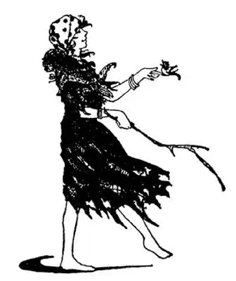

45
The Iron Curtain Countries
铁幕国家

THERE are thousands of cities and towns in the World that neither you nor I have ever heard of, yet millions of people call these cities and towns home . These same people probably have never heard of the town or city where you yourself live.
Between Russia and the rest of Europe are nine little countries, some of them not very important, but all of them most important to the people who live in them; and yet many people may live their whole lives and perhaps never hear of some of these places—unless they collect postage stamps. Six of these countries end in “ia” and two end in “land.”
The two countries next to Russia that aren’t run by Communists are Finland and Austria. Finland is the largest of these in-between countries. It lies between Russia and the Scandinavian Peninsula. Finland means Marsh Land, for it is a land of marshes and lakes. It is like Norway and Sweden in some ways—it has fiords and it makes paper and matches. It is a republic with a president.
The other “land” country is Po-land, which means Flat Land. It is almost as large as Finland. Poland has much farm land and there are iron and coal mines. Many famous musicians have been Poles.
Are you a good speller? How would you spell a cough or a sneeze? South of Poland is a long thin country with a name which sounds funny to us—something between a cough and a sneeze—Czechoslovakia. I have a set of china dishes that has stamped on the bottom MADE IN CZECHOSLOVAKIA, for there they used to make a great deal of china, and glassware too.
There used to be a country called Austria-Hungary. Now there are two countries—Austria and Hungary. Through Austria and Hungary runs a famous river—almost as famous as the Rhine. It is called the Danube; and, like the Rhine, the Danube has castles overlooking it, castles in which once lived robber barons. Fairy-tales and poems and music have been written about the Danube too. One of the most famous waltzes ever written is called “The Blue Danube.” The Blue Danube runs into the Black Sea. The capital of Austria is Vienna. Vienna used to be famous for its restaurants and cooking. Perhaps you have eaten Vienna rolls or been to a Vienna restaurant, even if you have never been to Austria, for we have Vienna rolls and restaurants in the United States too.
The name Hungary makes you think of food, or rather lack of food, but the name doesn’t mean hungry . It means Land of the Huns. In fact, Hungary should not be hungry, for a great deal of wheat for making bread is raised there. Have you ever eaten a kind of hash called Hungarian goulash? It is very highly seasoned with pepper and spices, and some restaurants in our country serve it. In some of these restaurants orchestras play Hungarian music. It is a kind of music such as the Gypsies dance to—slow and sweet, then fast and furious, with a hop, skip, and jump time. In Hungary many of the people are, strange to say, related to the Chinese way back. They are called Magyars.

She will tell your fortune
她会给你算命
Have you ever had your palm read or your fortune told? Gypsies are people who wander over the country doing that for a living. Most of the Gypsies come from a country next to Hungary and bordering on the Black Sea called Romania—nowadays frequently spelled Rumania. It is supposed that long ago people from Rome settled in that country and called it Romania from Rome. The language of Romania is still something like the Roman or Italian.
Bulgaria is an Iron Curtain country next to the Black Sea. It has forests and mountains as well as farm land. In the forests live bears, wild-cats, and wild boars. The ibex, a kind of wild goat, lives there too. And in the mountains there is a goat-like antelope called the chamois. We get our name for chamois or “shammy” cloths, used for washing automobiles, from this animal. Once chamois cloths were really soft leather from the skin of the chamois, but now we make the cloths from other materials.
An important business of the Bulgarians is perfumery. They raise fields of roses from which they make a very fine and expensive perfume called “attar of roses.” It takes a whole roomful of rose petals to make only a tiny bottle of attar of roses, so you can see why attar of roses is expensive.
Albania is a little country where most of the people raise farm crops or cattle and sheep. In parts of Albania the men wear skirts that reach to their knees and stick out all around like a dancer’s. The skirts that the men wear in Scotland are made of dark-colored cloths but the skirts worn by Albanian men are white.
Jugoslavia is a country just across the Adriatic Sea from Italy. It has many forests. It also has copper mines. In fact more copper is mined in Jugoslavia than in any other European country.
When I hear the name of a place or a person, some one thing usually pops into my head, though that thing may not be at all important.
If I hear “George Washington,” the first thing that pops into my head is “cherry-tree.”
If I hear “New York,” the first thing I think of is “sky-scrapers.”
So when I hear “Finland,” I think of marshes.
When I hear “Poland,” I think of music.
When I hear “Austria,” I think of Vienna rolls.
When I hear “Hungary,” I think of the Blue Danube.
When I hear “Romania,” I think of Gypsies.
When I hear “Bulgaria,” I think of chamois and perfumes.
When I hear “Albania,” I think of men with skirts.
When I hear “Czechoslovakia,” I think of china and glass.
When I hear “Jugoslavia,” I think of copper.
【中文阅读】
世界上有成千上万座城镇你我都没有听说过，但有千百万的人称它们为“家乡”，同样，他们很可能也没有听说过你所居住的城市。
在苏联和欧洲其他部分之间有九个小国家，其中有些并不是非常重要的国家，但对于居住在这些国家的人来说，它们都是至关重要的。然而，许多人也许活了一辈子也没有听说过这些地方——除非是喜欢集邮的人。这些国家的英文国名有六个是以“ia”结尾的，两个以“land”结尾。
紧邻苏联的两个国家是芬兰和奥地利。芬兰是所有夹在中间的国家中面积最大的，位于苏联和斯堪的纳维亚半岛之间。“芬兰”意思是“沼泽地”，因为在这片土地上有很多沼泽和湖泊。在某些方面，芬兰与挪威和瑞典很像——有峡湾，生产纸和火柴。芬兰也是共和政体，有一位总统。
另一个国名以“land”结尾的国家是波兰，“波兰”意思是“平地”，国土面积几乎与芬兰一样大，有很多的农田，有铁矿和煤矿。很多著名的音乐家都是波兰人。
你善于拼写吗？你是如何拼写“cough”（咳嗽）和“sneeze”（打喷嚏）这两个单词的？在波兰的南边，有一个狭长的国家，它的名字听起来很有趣——介乎cough和sneeze之间——捷克斯洛伐克。我有一套瓷盘，底部印着“捷克斯洛伐克制造”，因为捷克斯洛伐克以前大量生产瓷器和玻璃器皿。
曾经有一个国家，叫做奥匈帝国。现在是两个国家——奥地利和匈牙利。有一条著名的河——几乎与莱茵河齐名——流经奥地利和匈牙利，叫多瑙河；而且，像莱茵河一样，多瑙河两岸也有高耸的城堡，这些城堡曾经住着强盗贵族。也有童话故事、诗歌和音乐描写多瑙河，迄今为止最有名的华尔兹舞曲之一就是“蓝色的多瑙河”。“蓝色的”多瑙河流进“黑色的”海——黑海。奥地利的首都是维也纳，维也纳曾经以餐馆和烹饪闻名于世。即使没有去过奥地利，你也许品尝过维也纳面包卷或去过维也纳餐馆。因为在美国就有维也纳面包卷，还有维也纳风味的餐馆。
“匈牙利”这个名字会让你想到食物，确切点说，想到缺乏食物 [1] ，但是这个名字并不是“饥饿”的意思，它的意思是“匈奴人之乡”。事实上，匈牙利应该不会缺乏食物，因为匈牙利大量种植小麦，这些小麦很适合做面包。你吃过一种名叫“匈牙利红烩牛肉”的碎杂烩吗？它的味道很浓，因为里面放了很多胡椒和调料。美国有些餐馆就有这道菜。一些这样的餐馆里还有管弦乐队演奏匈牙利音乐，这种音乐类似吉卜赛舞蹈的伴奏曲——随着舞步节拍的变化（有单脚小跳、双脚交替跳和双脚大跳），乐曲时而舒缓柔和，时而快速激烈。说来也怪，在匈牙利，有很多人又与很久以前的中国人有亲缘关系，这些人叫做“马札尔人”。
你让人看过手相或算过命吗？吉卜赛人在匈牙利各地流浪以看手相和算命为生。大多数吉卜赛人来自匈牙利的邻国“罗马尼亚”，英文现在常拼作Rumania。罗马尼亚与黑海毗连。据说很久以前，罗马人来到这里定居，按照“罗马”把这个国家称为罗马尼亚。现在的罗马尼亚语言还有点像罗马语或意大利语。
保加利亚是黑海边的一个国家，它有很多森林、山脉和农田。森林里有熊、野猫和野猪出没。巨角塔尔羊——一种野山羊，也生活在那儿。在山区还生活一种形似山羊的小羚羊，名叫岩羚羊。我们擦拭汽车用的岩羚羊布，其名正是取自这种动物。岩羚羊布一度是用真岩羚羊皮制成的非常柔软的皮革。但是现在我们采用其他材料制成仿岩羚羊布。
保加利亚一项重要的产业就是香水调制业。他们在大片田地里种植玫瑰花，用玫瑰花生产一种精致、昂贵的香水叫“玫瑰油”。生产一小瓶玫瑰油需要整整一屋子的玫瑰花瓣，这样你就明白为什么玫瑰油这么贵了吧。
阿尔巴尼亚是一个小国，大部分人种植庄稼或饲养牛羊。在阿尔巴利亚一些地方，男人穿齐膝的裙子，裙摆像舞裙一样向外张开。苏格兰男人穿的裙子布料是深颜色的，而阿尔巴利亚男人穿的短裙则是白色的。
隔着亚得里亚海与意大利遥遥相望的国家是南斯拉夫。南斯拉夫有丰富的森林和铜矿资源。事实上，南斯拉夫铜矿产量比其他任何一个欧洲国家的都要多。
当我听到一个地名或人名，就会立刻联想到某个东西，尽管那个东西也许一点都不重要。
听到“纽约”，我马上想到摩天大楼。
听到“芬兰”，我想到沼泽地。
听到“波兰”，我想到音乐。
听到“奥地利”，我想到维也纳面包卷。
听到“匈牙利”，我想到蓝色多瑙河。
听到“罗马尼亚”，我想到吉卜赛人。
听到“保加利亚”，我想到岩羚羊和香水。
听到“阿尔巴尼亚”，我想到穿短裙的男人。
听到“捷克斯洛伐克”，我想到瓷器和玻璃。
听到“南斯拉夫”，我想到铜。